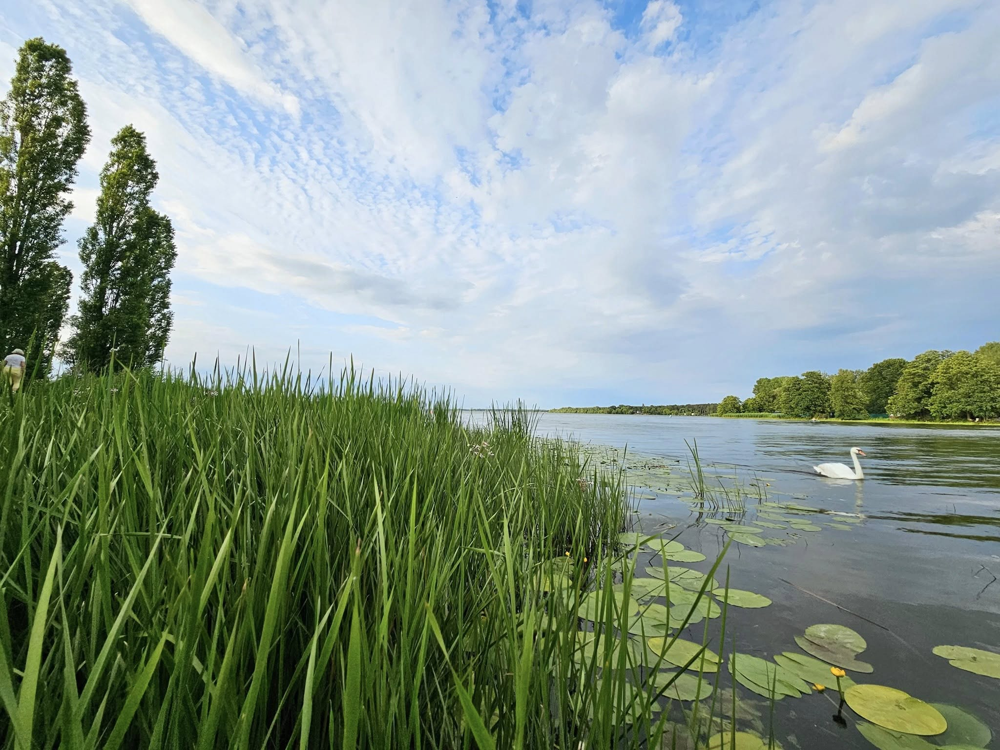

Weekend nad Zegrzem - plan na dzień w porcie Wodnik

Krótki plan, który pomaga wykorzystać dzień nad wodą bez pośpiechu.
Jeśli planujesz weekend nad Zegrzem, warto połączyć spacer, odpoczynek i dobry posiłek. Poniżej znajdziesz prosty harmonogram, który sprawdzi się zarówno dla par, jak i rodzin.
Przykładowy plan dnia
- 11:00-13:00 - spacer po porcie i krótki relaks nad wodą.
- 13:00-15:00 - obiad w Ręczna Robota 2.0 Wodnik.
- 15:00-17:00 - czas na kawę, lemoniadę i zdjęcia przy marinie.
- 17:00+ - wieczorny chillout przy zachodzie słońca.
Co zamówić po spacerze
Po aktywnym poranku najlepiej sprawdzają się nasze dania główne i lekkie napoje. Warto też zerknąć do sekcji sezonowej, bo regularnie pojawiają się tam nowości.